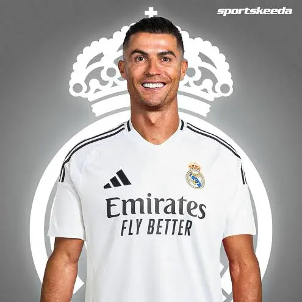
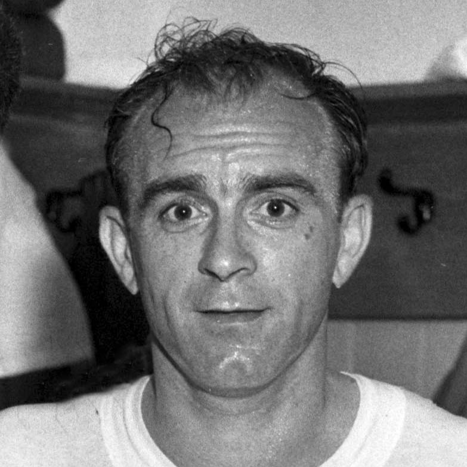
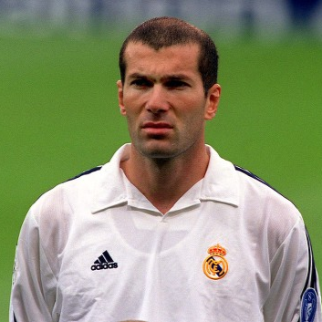
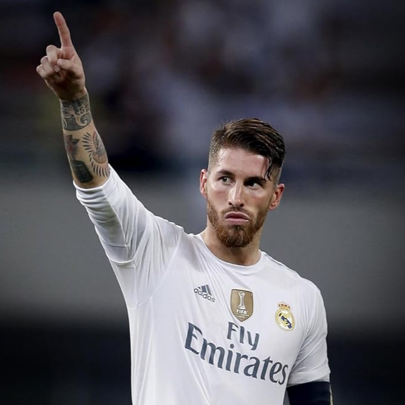

Greatest Real Madrid Players of All Time

Cristiano Ronaldo
The club's all-time leading scorer with 450 goals, he was the powerhouse behind four Champions League titles in five years. His relentless overhead kicks and big-game heroics cemented him as the greatest modern Madridista icon.

Alfredo Di Stéfano
Known as "The Blond Arrow," he transformed Real Madrid into a global powerhouse by winning five consecutive European Cups in the 1950s. He is the ultimate Founding Father of the club’s winning DNA and prestige.

Zinedine Zidane
He defined "Galan" elegance, most famously scoring the greatest volley in Champions League history during the 2002 final. Beyond his playing days, he achieved legendary status by managing the team to an unprecedented three-peat of European titles.

Sergio Ramos
The quintessential captain whose 93rd-minute equaliser in 2014 birthed the era of "La Décima" and beyond. A defensive warrior, he epitomised the club's "never-say-die" spirit through 671 appearances.